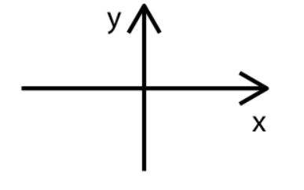
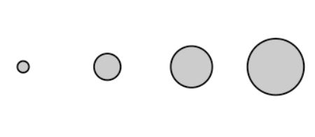
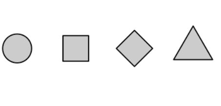
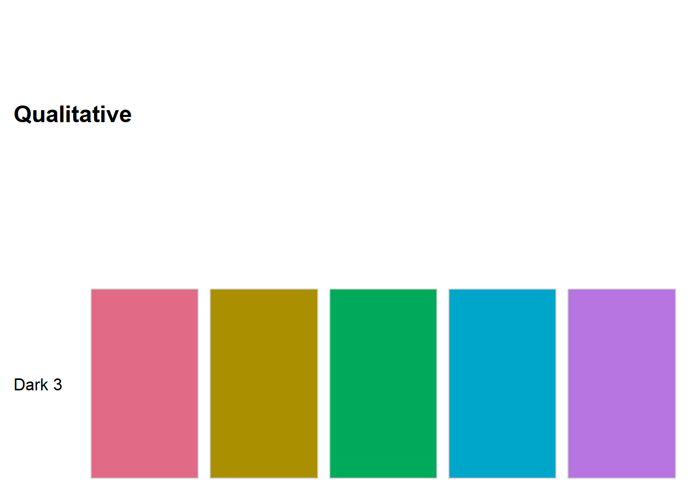
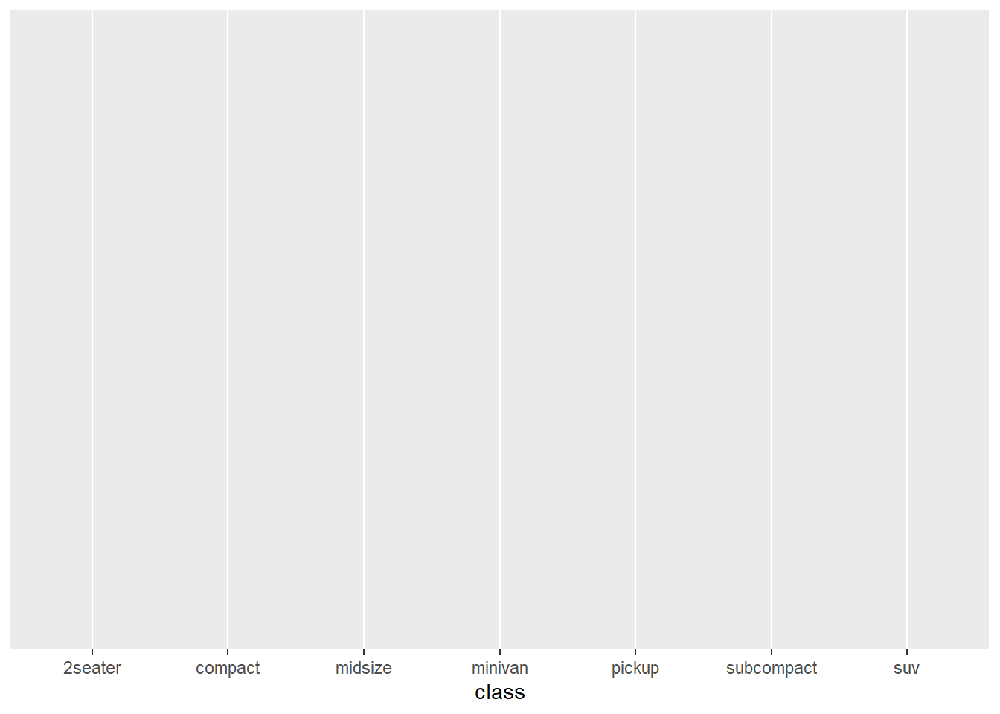

Code
2 + 2[1] 4Viz Tool
The plots in Abbildung 1 show the relationship between city and highway mileage for 38 popular models of cars. (Abendroth und Diewald 2019)
Das ist ein spannendes Tool für meine Arbeit
In Abbildung 1 (a) the points are colored by the number of cylinders while in Abbildung 1 (b) the points are colored by engine displacement. (Bannert 2022)
ggplot(mpg, aes(x = hwy, y = cty, color = cyl)) +
geom_point(alpha = 0.5, size = 2) +
scale_color_viridis_c() +
theme_minimal()
ggplot(mpg, aes(x = hwy, y = cty, color = displ)) +
geom_point(alpha = 0.5, size = 2) +
scale_color_viridis_c(option = "E") +
theme_minimal()

You can add options to executable code like this
2 + 2[1] 4[1] 4The echo: false option disables the printing of code (only output is displayed).
Wichtige Aspekte werden hier besprochen. (Nussbaumer Knaflic 2017)
####TODO: Begrifflichkeiten -> Skale, Aestetics Gestaltungselement, Visuelle eigenschaft, visuelle Elemente, Ebene
Daten zu visualisieren heisst, eine Transformation von Daten hinzu systematische und logische visuelle Elemente zu vollziehen, welche in ihrer Summe als bildliche Einheit interpretiert wird. Im Kern ordnet der Transformationsprozess der Datenvisualisierung den Daten ein quantifizierbares Merkmal hinzu. Das kann eine Grösse, eine Farbe, oder eine Position sein. In der Datenvisualisierungen stehen 4 grundlegende Aesthetics (Gestaltungselemente) für die Darstellung von Daten als Grafiken zur Verfügung. (Wilke 2020, 7)
| Position | Grösse | Farbe | Form |
|---|---|---|---|
|  |  |  |
Die Aesthetics Linientyp, Linienbreite und Transparenz können als spezial Elemente von Form, Grösse und Farbe interpretiert werden.
Aesthetics werden in 2 Skalen unterteilt: solche die kontinuierliche Daten darstellen können und solche, die das nicht können. (Wilke 2020, 8–9) Unter kontinuierliche Daten werden alle Skalenniveaus, für die eine beliebige Anzahl an an Zwischenausprägungen besteht, gefasst. Wie beispielsweise eine Zeitdauer. Umgekehrt haben diskrete Daten eine begrenzte Anzahl an Ausprägungen die nicht weiter abgestuft werden kann. Es ist beispielsweise nicht möglich, dass eine Familie 1.7 Kinder hat. Das Skalenniveau definiert die Art der Ausprägung (Werte) der gemessenen Dimensionen (Merkmale) die in einer Variable erfasst wird. Bei quantitativen Forschungsmethoden werden die Skalen sehr genau definiert, da das Skalenniveau die rechnerischen Operationen und die Vergleichsmöglichkeiten definiert. (Diaz-Bone 2006, Kap. 2.1 und 2.2). Für die Anwendung der Aesthetics ist die Unterscheidung zwischen kontinuierlichen und diskreten Skalen entscheidende.
# source: https://www.zh.ch/de/politik-staat/opendata.zhweb-noredirect.zhweb-cache.html?keywords=ogd#/datasets/1803@awel-kanton-zuerich
abfall_zh <- read_csv(here::here("data", "KTZH_00001803_00003460.csv"))Rows: 34668 Columns: 6
── Column specification ────────────────────────────────────────────────────────
Delimiter: ","
chr (3): Gemeinde, Abfallart, Einheit
dbl (3): Jahr, Gemeinde_Nr, Wert
ℹ Use `spec()` to retrieve the full column specification for this data.
ℹ Specify the column types or set `show_col_types = FALSE` to quiet this message.abfall_zh_clean <-
abfall_zh|>
filter(row_number() %% 214 == 1) |>
select(!c("Gemeinde_Nr", "Einheit")) |>
rename("Menge in Tonnen" = Wert)
abfall_zh_clean |>
head(4) |>
knitr::kable()| Jahr | Gemeinde | Abfallart | Menge in Tonnen |
|---|---|---|---|
| 2021 | Aeugst a.A. | Brennbare Abfälle und Sperrgut | 323 |
| 2021 | Affoltern a.A. | Brennbare Abfälle und Sperrgut | 2188 |
| 2021 | Bonstetten | Brennbare Abfälle und Sperrgut | 871 |
| 2021 | Hausen a.A. | Brennbare Abfälle und Sperrgut | 603 |
Die Spalte Jahr ist ein diskreter numerischer Wert. Im Gegensatz dazu wäre 01.01.2021 ein kontinuierlicher Datumswert. Gemeinde und Abfallart sind beides kategorische (Faktor) Werte ohne logische Reihenfolge. Im Gegensatz dazu besitzen die Kategorien “hässlich”, “schön”, “wunderschön” eine logischen Reihenfolge. Menge in Tonnen ist ein kontinuierlicher numerischer Wert. Neben ganzen Zahlen gehören auch rationale oder reelle Zahlen in diese Kategorie.
Für die Abbildung der Daten auf Aesthetics wird angegeben, welche Datenwerte welchem Wert auf der Datenskala entspricht. Das bedeutet, mithilfe der Skala erfolgt die eindeutige Zuordnung von Daten und Aesthetics. Bei einem Diagramm mit einer x-Achse wird angegeben welcher Wert auf welche Position auf dieser Achse dargestellt wird. Der gleichen Logik folgend, geben wir an welche Grösse, Farbe oder Form ein Datenwert einnehmen soll. Anstatt auf einer Positionsskala werden die einfach Grössen-, Farben- oder Formskala verwendet. Ein Datenwert entspricht in jeder Skala einem eindeutigen Skalawert bzw. Aestetic. Je Datenwert darf es nur ein Skalawert geben und umgekehrt. Eine eins zu eins Beziehung ist notwendig, damit die Datenvisualisierung nicht mehrdeutig wird. (Vgl. Kapitel 2.5.2)

Wenden wir diese Erkenntnise beim Datensatz zum Abfall im Kanton Zürich an, dann erhalten wird folgendes Ergebnis: Auf der x-Achse werden die Gemeinden anhand der Positionsskala platziert. Die Variable hat keine logische Reihenfolge. Für die Unterstützung des lesens des Diagramms, sind die Gemeinden anhand der Menge an Abfall sortiert. Auf der Positionsskala y-Achse ist die Menge in Tonnen übertragen. Zusätzlich wurden die Gemeinden auf die Farben übertragen. Vor dem Hintergrund des Data Storytelling lässt sich die Frage stellen, ob die Verwendung des Aesthetic Farbe sinnvoll ist. (vgl. KAPITEL) Bei diesem Beispiel steht jedoch die Beziehung zwischen den Datenwerte und Aesthetics durch Skalen im Zentrum. Daher wurde für jede Gemeinde eine eigene Farbe verwendet.
abfall_zh_clean |>
filter(Gemeinde %in% c("Aeugst a.A.",
"Affoltern a.A.",
"Bonstetten",
"Hausen a.A."),
Abfallart == "Brennbare Abfälle und Sperrgut"
) |>
plot_amounts_grouped(
x = fct_reorder(Gemeinde, `Menge in Tonnen`),
y = `Menge in Tonnen`,
group = Gemeinde) +
labs(x = "Gemeinde") +
theme(legend.position = "none")
Bei diesem Beispiel entspricht die Positionsskala einem kartesischen 2D-Koordinatensystem. Jeder Ort ist durch einen x- und y-Wert eindeutig. Da die Achsen positive als auch negative Zahlen darstellen, muss der Zahlenbereich für jede Achse definiert werden. Bei diesem Beispiel verläuft die y-Achse von 0 bis 2297.4 (5% über dem höchsten y-Wert, welcher bei diesem Beispiel 2188 ist). Ist ein Datenwert innerhalb des definierten Zahlenbereichs, dann wird er im Diagramm an der entsprechenden Position abgebildet. Ansonsten wird der Wert verworfen und erscheint nicht im Diagramm.
2297.4Für die effektive Anwendung Datenvisualisierungen müssen die Daten als “Tidy Data” (Wickham 2014) aufbereitet sein. Folgende Kriterien müssen gemäss Wickham (Wickham 2014, 4) erfüllt sein, damit ein Datensatz dem Grundatz Tidy Data entspricht:
Jede Variable hat eine eigene Spalte.
Jede Beobachtung hat eine eigene Zeile.
Jeder Wert hat eine eigene Zelle.

Abgesehen, dass mit Tidy Data eine konsistente Methode für die Datenspeicherung verwendet wird, kann R die Vorteile einer vektorisierten Programmiersprache so optimal ausschöpfen. 141 r4ds Vektorisiert bedeutet, das eine Funktion einen Vektor mit Werten als Input nimmt und einen Vektor mit der gleichen Anzahl an Werten als Output retourniert. 53 Tidy Data entspricht einem langen Datenformat. Dadurch entsteht eine Redundanz an Werten, was bei der Speicherung von Daten nicht gewünscht ist, aber die Datenanalyse vereinfacht. (Healy 2018a, 56)
….
Die Visualisierungen im entwickelten Paket kissviz basieren auf dem Paket ggplot2 (Hadley 2016), welches den Ansatz “The Grammar of Graphics” (Wilkinson 2005) verfolgt und vektorisiert ist. Durch die grammer of graphics werden Beziehungen zwischen den Daten und ihrer grafischen Darstellung ausgedrückt und bietet eine einheitliche Möglichkeit Visualisierungen zu erstellen. Bei Visualisierungen besteht eine strukturierte Beziehung zwischen den Datenvariablen und deren Repräsentation in einer Grafik. Dieser Prozess wird mapping genannt. Bei ggplot2 werden Daten auf bestimmte visuelle Elemente zugeordnet. Dazu werden zuerst die Daten definiert, anschliessend wird das visuelle Element definiert und am Ende werden die Details einer Visualisierung definiert. Das heisst, eine Code mit ggplot2 folgt bei der Erstellung einer Grafik einer logischen Struktur. Es werden Verbindungen zwischen den Datenvariablen und den grafischen Elementen (Farbe, Form, Position, Grösse) einer Visualisierung hergestellt. Diese Verbindungen heissen aesthetics. Damit eine solche Verbindung entstehen kann wird in der Funktion ggplot() die Daten und die Beziehung zwischen den Datenvariablen und dem mapping auf die aesthetics definiert. Anschliessend wird dem Programm gesagt, welcher Diagrammtyp (Balkendiagramm, Streudiagramm, etc.) dargestellt werden soll. Diagrammtype werden anhand der geom definiert. Mit dem geom wird gesagt welches geometrische Objekt (Balken, Punkte, etc.) für das Diagramm benutzt wird. Das heisst Balkendiagramme werden mit geom_bar() oder Streuudiagramme mit geom_point() erzeugt. Diese Abfolge von Code reicht, damit ggplot2 eine Grafik erstellen kann. Um die Details der Grafik wie Achsen, Skalen oder Beschriftungen zu kontrollieren, werden weitere Codestücke hinzugefügt. Dafür wird auf die gleiche Logik wie beim definieren der Diagrammtypen benutzt. Jeder Teilaspekt hat eine eigene Funktion, welches Argumente besitze, die spezifizieren was das an der Grafik angepasst wird. (Healy 2018b, 54–56)
Durch die Zerstückelung der einzelnen Schritte der Erstellung einer Visualisierung, kann systematisch Stück für Stück eine individuelle Grafik erstellt werden. Dabei basieren die unterschiedlichen Grafiktypen immer auf den oben beschriebenen Grundspezifikationen. (Wickham 2010, 4–5) Die Umsetzung in ggplot2 folgt immer dem gleichen Konzept (Healy 2018b, 60):
# Step 1: Tidy Data
mpg |>
dplyr::select(manufacturer:cyl, class) |>
head() |>
knitr::kable()| manufacturer | model | displ | year | cyl | class |
|---|---|---|---|---|---|
| audi | a4 | 1.8 | 1999 | 4 | compact |
| audi | a4 | 1.8 | 1999 | 4 | compact |
| audi | a4 | 2.0 | 2008 | 4 | compact |
| audi | a4 | 2.0 | 2008 | 4 | compact |
| audi | a4 | 2.8 | 1999 | 6 | compact |
| audi | a4 | 2.8 | 1999 | 6 | compact |
# Step 2: Mapping
plot <-
ggplot(data = mpg,
mapping = aes(x = class)) # aesthetics
plot
geom_*() Funktion angepasst werden.# Step 3: Geom
plot <-
plot +
geom_bar()
plot
# Step 4: Details
plot <-
plot +
scale_y_continuous(expand = c(0, 0)) +
labs(
title = "SUVs sind die grösse Gruppe von Fahrzeugtypen",
x = "Autotyp",
y = "Anzahl"
) +
cowplot::theme_minimal_hgrid()
plot
…